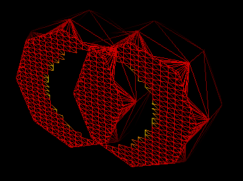
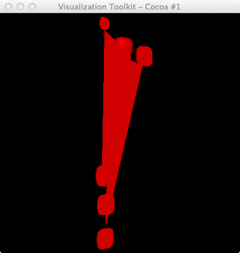
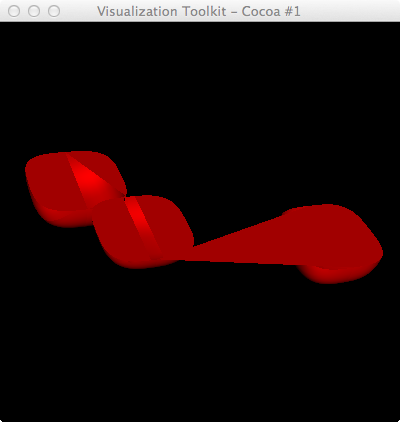
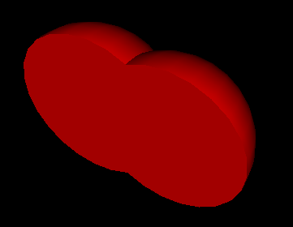
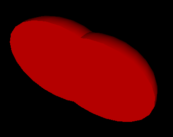
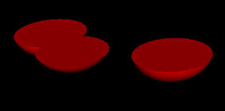
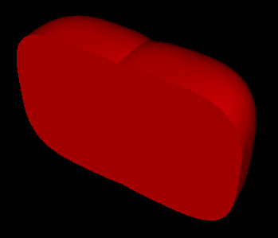

[edit]
Contents[hide] |
The following script demonstrates a problem with clipping & capping glyphs. Rf http://www.vtk.org/Wiki/VTK/Closed_Surface_Clipping
# Run via: python clip_glyphs_bug.py 0.4
import vtk
import sys
import string
argc = len(sys.argv)
#print 'argc=',argc
if argc < 2:
print 'Usage: ',sys.argv[0],' sphereRadius'
raise ValueError, 'Too few input args'
idx=1
sphereRadius = string.atof(sys.argv[idx])
maxX = 340
maxY = 296
maxZ = 35
ren1 = vtk.vtkRenderer()
renWin = vtk.vtkRenderWindow()
renWin.AddRenderer(ren1)
iren = vtk.vtkRenderWindowInteractor()
iren.SetRenderWindow(renWin)
# default superquadric with a radius of 0.5, non-toroidal, spherical, and centered at the origin, with a scaling factor of 1 in each direction, a theta resolution and a phi resolutions of 16
sq = vtk.vtkSuperquadricSource()
sq.SetSize(sphereRadius)
sq.SetPhiRoundness(0.85)
sq.SetPhiRoundness(0.6)
sq.SetThetaRoundness(0.7)
sq.SetThetaResolution(32) # factor of 8
sq.SetPhiResolution(32) # factor of 4
valStr="""174.665893 173.241299 23.432019 2155
182.009208 115.828269 20.937845 2172
172.769195 86.174625 35.442416 2136
175.569509 191.228895 11.808064 2381
172.542396 102.418894 35.030876 2170
165.326176 179.900307 22.291411 1956
176.263722 189.736278 24.114065 2332
175.003451 189.158758 35.972821 2318
171.373889 175.923725 11.516144 2137
171.878868 116.354553 35.484527 2262
"""
pts = vtk.vtkPoints()
myScalars = vtk.vtkFloatArray()
myScalars.SetName("myScalars")
for idx in range(len(valStr.splitlines())):
x = float(valStr.splitlines()[idx].split()[0])
y = float(valStr.splitlines()[idx].split()[1])
z = float(valStr.splitlines()[idx].split()[2])
vol = float(valStr.splitlines()[idx].split()[3])
print x,y,z,vol
pts.InsertNextPoint(x,y,z)
myScalars.InsertNextValue(vol ** 0.333)
pd = vtk.vtkPolyData()
pd.SetPoints(pts)
pd.GetPointData().SetScalars(myScalars)
glyphs = vtk.vtkGlyph3D()
glyphs.SetInput(pd)
glyphs.SetSource(sq.GetOutput())
#glyphs.OrientOn()
mapper = vtk.vtkPolyDataMapper()
mapper.SetInputConnection(glyphs.GetOutputPort())
actor = vtk.vtkActor()
actor.SetMapper(mapper)
#----------------
plane1 = vtk.vtkPlane()
plane1.SetOrigin(maxX/2.0, maxY/2.0, maxZ/2.0)
plane1.SetNormal(-1, 0, 0) # keep everything in direction of normal
xplaneColl = vtk.vtkPlaneCollection()
xplaneColl.AddItem(plane1)
clip8x = vtk.vtkClipClosedSurface()
clip8x.SetClippingPlanes(xplaneColl)
clip8x.SetInputConnection(glyphs.GetOutputPort())
#clip8x.SetActivePlaneColor(1.0,0,0)
clip8x.GenerateFacesOff()
clip8x.GenerateFacesOn()
normals8x = vtk.vtkPolyDataNormals()
normals8x.SetInputConnection(clip8x.GetOutputPort())
normals8x.FlipNormalsOn()
normals8x.FlipNormalsOff()
hepClipMapper8x = vtk.vtkDataSetMapper()
hepClipMapper8x.SetInputConnection(normals8x.GetOutputPort())
hepClipMapper8x.ScalarVisibilityOff()
hepClipActor8x = vtk.vtkActor()
hepClipActor8x.SetMapper(hepClipMapper8x)
hepClipActor8x.GetProperty().SetColor(1,0,0) # color the clipped (saved) polys
#-------------------
#ren1.AddActor(actor) # to see non-clipped glyphs
ren1.AddActor(hepClipActor8x) # to see clipped glyphs
renWin.SetSize(512,512)
renWin.SetSize(400,400)
cam = ren1.GetActiveCamera()
#cam.Elevation(10.0)
ren1.ResetCamera()
cam.Azimuth(55) # Elevation would spin about X
cam.OrthogonalizeViewUp()
renWin.Render()
iren.Start()

David Gobbi suggested I try a vtkCleanPolyData filter on the vtkSuperquadricSource, and that did indeed fix this particular problem. However, if I try a different clipping plane on some other points, I get the same sort of problem:
valStr="""174.665893 173.241299 23.432019 2155 194.780569 168.285308 24.659716 2110 200.983009 159.892665 35.617903 2413 199.652646 159.448213 23.434645 2211 183.705013 172.033572 35.02462 2234""" plane1.SetOrigin(maxX/2.0, maxY/2.0, maxZ/2.0+5.0) plane1.SetNormal(0, 0, -1)

If I reduce the SetSize of the superquadricsource (e.g. =0.3) for this particular dataset, it's OK; however, I don't really want to do that.
# python bool2.py 0.4 0.1 30 1
import vtk
import sys
import string
argc = len(sys.argv)
#print 'argc=',argc
if argc < 3:
print 'Usage: ',sys.argv[0],' sphereRadius planeCenterZ planeRes displayBoolFlag'
raise ValueError, 'Too few input args'
idx=1
sphereRadius = string.atof(sys.argv[idx])
idx += 1
planeCenterZ = string.atof(sys.argv[idx])
idx += 1
planeRes = string.atoi(sys.argv[idx])
idx += 1
displayBool = string.atoi(sys.argv[idx])
maxX = 340
maxY = 296
maxZ = 35
ren1 = vtk.vtkRenderer()
renWin = vtk.vtkRenderWindow()
renWin.AddRenderer(ren1)
iren = vtk.vtkRenderWindowInteractor()
iren.SetRenderWindow(renWin)
sphere1 = vtk.vtkSphereSource()
sphere2 = vtk.vtkSphereSource()
sphere2.SetCenter(0.5,0,0)
#----------------
# default superquadric with a radius of 0.5, non-toroidal, spherical, and centered at the origin,
# with a scaling factor of 1 in each direction, a theta resolution and a phi resolutions of 16
sq = vtk.vtkSuperquadricSource()
sq.SetSize(sphereRadius)
sq.SetThetaRoundness(0.7)
sq.SetThetaResolution(32) # factor of 8
sq.SetPhiResolution(32) # factor of 4
sqClean= vtk.vtkCleanPolyData()
sqClean.SetInputConnection(sq.GetOutputPort())
sqTris = vtk.vtkTriangleFilter()
sqTris.SetInputConnection(sqClean.GetOutputPort())
sqMapper = vtk.vtkPolyDataMapper()
sqMapper.SetInputConnection(sqTris.GetOutputPort())
sqActor = vtk.vtkActor()
sqActor.SetMapper(sqMapper)
#----------------------
valStr="""0. 0. 0. 1
0.5 0. 0. 1"""
pts = vtk.vtkPoints()
myScalars = vtk.vtkFloatArray()
myScalars.SetName("myScalars")
for idx in range(len(valStr.splitlines())):
x = float(valStr.splitlines()[idx].split()[0])
y = float(valStr.splitlines()[idx].split()[1])
z = float(valStr.splitlines()[idx].split()[2])
vol = float(valStr.splitlines()[idx].split()[3])
print x,y,z,vol
pts.InsertNextPoint(x,y,z)
# myScalars.InsertNextValue(vol ** 0.333)
myScalars.InsertNextValue(vol)
pd = vtk.vtkPolyData()
pd.SetPoints(pts)
pd.GetPointData().SetScalars(myScalars)
glyphs = vtk.vtkGlyph3D()
glyphs.SetInput(pd)
#glyphs.SetSource(sq.GetOutput())
#glyphs.SetSource(cleanSQ.GetOutput())
#glyphs.SetSource(sqTris.GetOutput())
glyphs.SetSource(sphere1.GetOutput())
#glyphs.OrientOn()
gClean= vtk.vtkCleanPolyData()
gClean.SetInputConnection(glyphs.GetOutputPort())
gTris = vtk.vtkTriangleFilter()
gTris.SetInputConnection(gClean.GetOutputPort())
glyphMapper = vtk.vtkPolyDataMapper()
#glyphMapper.SetInputConnection(glyphs.GetOutputPort())
glyphMapper.SetInputConnection(gTris.GetOutputPort())
glyphActor = vtk.vtkActor()
glyphActor.SetMapper(glyphMapper)
#----------------
plane1 = vtk.vtkPlaneSource()
#plane1.SetOrigin(0, 0, )
#plane1.SetCenter(0, 0, 0.2 )
#plane1.SetCenter(0, 0, planeCenterZ )
#plane1.SetNormal(0, 0, 1)
x0=-0.5
y0=-0.5
plane1.SetOrigin(x0, y0, 0.2)
plane1.SetPoint1(1.0,y0,0.2)
plane1.SetPoint2(x0,0.5,0.2)
plane1.SetResolution(planeRes,planeRes)
#plane1.SetXResolution(20)
#plane1.SetYResolution(20)
planeTris = vtk.vtkTriangleFilter()
planeTris.SetInputConnection(plane1.GetOutputPort())
planeMapper = vtk.vtkPolyDataMapper()
planeMapper.SetInputConnection(planeTris.GetOutputPort())
planeActor = vtk.vtkActor()
planeActor.SetMapper(planeMapper)
boolF = vtk.vtkBooleanOperationPolyDataFilter()
boolF.SetOperationToDifference() # or: Union, Difference
boolF.SetOperationToUnion() # or: Union, Difference
boolF.SetOperationToIntersection() # or: Union, Difference
#boolF.SetInput(0, glyphs.GetOutput())
#boolF.SetInputConnection(0, glyphs.GetOutput())
boolF.SetInput(0, sphere1.GetOutput())
boolF.SetInput(0, sq.GetOutput())
boolF.SetInput(0, sphere1.GetOutput())
boolF.SetInput(0, sqTris.GetOutput())
boolF.SetInput(0, glyphs.GetOutput())
boolF.SetInput(0, gClean.GetOutput())
boolF.SetInput(1, sphere2.GetOutput())
boolF.SetInput(1, planeTris.GetOutput())
boolMapper = vtk.vtkPolyDataMapper()
boolMapper.SetInputConnection(boolF.GetOutputPort())
boolActor = vtk.vtkActor()
boolActor.SetMapper(boolMapper)
boolActor.GetProperty().SetColor(1,0,0) # color the clipped (saved) polys
#-------------------
#ren1.AddActor(actor) # to see non-clipped glyphs
if displayBool:
ren1.AddActor(boolActor)
else:
# ren1.AddActor(sqActor)
ren1.AddActor(glyphActor)
ren1.AddActor(planeActor)
renWin.SetSize(512,512)
renWin.SetSize(400,400)
cam = ren1.GetActiveCamera()
#cam.Elevation(10.0)
ren1.ResetCamera()
#cam.Azimuth(55) # Elevation would spin about X
cam.OrthogonalizeViewUp()
renWin.Render()
iren.Start()
Using this filter generates desired results for a single SuperQuadric, but doesn't for 2 glyphs that overlap (with SQ source for the glyphs). Nor does it work for sphere glyphs.
# python clip_glyphs_xform.py 0.5
import vtk
import sys
import string
argc = len(sys.argv)
#print 'argc=',argc
if argc < 2:
print 'Usage: ',sys.argv[0],' sphereRadius'
raise ValueError, 'Too few input args'
idx=1
sphereRadius = string.atof(sys.argv[idx])
maxX = 340
maxY = 296
maxZ = 35
ren1 = vtk.vtkRenderer()
renWin = vtk.vtkRenderWindow()
renWin.AddRenderer(ren1)
iren = vtk.vtkRenderWindowInteractor()
iren.SetRenderWindow(renWin)
sphere1 = vtk.vtkSphereSource()
sphere1.SetThetaResolution(24)
sphere1.SetPhiResolution(24)
sphere1.SetRadius(sphereRadius)
transform = vtk.vtkTransform()
transform.Scale(1.3, 1.0, 1)
transF = vtk.vtkTransformPolyDataFilter()
transF.SetInputConnection(sphere1.GetOutputPort())
transF.SetTransform(transform)
# default superquadric with a radius of 0.5, non-toroidal, spherical, and centered at the origin, with a scaling factor of 1 in each direction, a theta resolution and a phi resolutions of 16
sq = vtk.vtkSuperquadricSource()
sq.SetSize(sphereRadius)
sq.SetPhiRoundness(0.85)
sq.SetPhiRoundness(0.6)
sq.SetThetaRoundness(0.7)
sq.SetThetaResolution(32) # factor of 8
sq.SetPhiResolution(32) # factor of 4
cleanSQ= vtk.vtkCleanPolyData()
cleanSQ.SetInputConnection(sq.GetOutputPort())
valStr="""0. 0. 0. 1
0.5 0. 0. 1"""
pts = vtk.vtkPoints()
myScalars = vtk.vtkFloatArray()
myScalars.SetName("myScalars")
for idx in range(len(valStr.splitlines())):
x = float(valStr.splitlines()[idx].split()[0])
y = float(valStr.splitlines()[idx].split()[1])
z = float(valStr.splitlines()[idx].split()[2])
vol = float(valStr.splitlines()[idx].split()[3])
print x,y,z,vol
pts.InsertNextPoint(x,y,z)
myScalars.InsertNextValue(vol ** 0.333)
pd = vtk.vtkPolyData()
pd.SetPoints(pts)
pd.GetPointData().SetScalars(myScalars)
glyphs = vtk.vtkGlyph3D()
glyphs.SetInput(pd)
#glyphs.SetSource(sq.GetOutput())
#glyphs.SetSource(cleanSQ.GetOutput())
#glyphs.SetSource(sphere1.GetOutput())
glyphs.SetSource(transF.GetOutput())
#glyphs.OrientOn()
mapper = vtk.vtkPolyDataMapper()
mapper.SetInputConnection(glyphs.GetOutputPort())
actor = vtk.vtkActor()
actor.SetMapper(mapper)
#----------------
plane1 = vtk.vtkPlane()
plane1.SetOrigin(maxX/2.0, maxY/2.0, maxZ/2.0)
plane1.SetNormal(-1, 0, 0) # keep everything in direction of normal
# if doing the xy-plane
plane1.SetOrigin(maxX/2.0, maxY/2.0, maxZ/2.0+5.0)
plane1.SetNormal(0, 0, -1) # keep everything in direction of normal
plane1.SetOrigin(0, 0, 0)
plane1.SetNormal(0, 0, -1) # keep everything in direction of normal
xplaneColl = vtk.vtkPlaneCollection()
xplaneColl.AddItem(plane1)
clip8x = vtk.vtkClipClosedSurface()
clip8x.SetClippingPlanes(xplaneColl)
clip8x.SetInputConnection(glyphs.GetOutputPort())
#clip8x.SetActivePlaneColor(1.0,0,0)
clip8x.GenerateFacesOff()
clip8x.GenerateFacesOn()
normals8x = vtk.vtkPolyDataNormals()
normals8x.SetInputConnection(clip8x.GetOutputPort())
normals8x.FlipNormalsOn()
normals8x.FlipNormalsOff()
hepClipMapper8x = vtk.vtkDataSetMapper()
hepClipMapper8x.SetInputConnection(normals8x.GetOutputPort())
hepClipMapper8x.ScalarVisibilityOff()
hepClipActor8x = vtk.vtkActor()
hepClipActor8x.SetMapper(hepClipMapper8x)
hepClipActor8x.GetProperty().SetColor(1,0,0) # color the clipped (saved) polys
#-------------------
#ren1.AddActor(actor) # to see non-clipped glyphs
ren1.AddActor(hepClipActor8x) # to see clipped glyphs
renWin.SetSize(512,512)
renWin.SetSize(400,400)
cam = ren1.GetActiveCamera()
#cam.Elevation(10.0)
ren1.ResetCamera()
#cam.Azimuth(55) # Elevation would spin about X
cam.OrthogonalizeViewUp()
renWin.Render()
iren.Start()


With spheres as glyphs; transformed into ellipsoid (on right).

Also seems to work with the 3 glyphed points used above.
So I return to my original attempt at using vtkClipClosed filter and it works for these 2 intersecting glyphed (SQ) points, but still fails for the 3 glyphed points in the first section:
